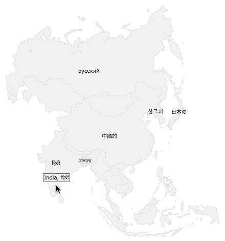
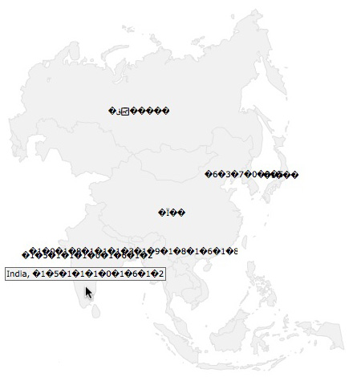

FusionMaps XT allows you to use multi-lingual (UTF-8) characters on the maps.
FusionMaps XT supports only left-to-right languages as of now. It doesn't have native support for right-to-left languages like Hebrew. So, if you want to use Hebrew with FusionMaps XT, you'll have to programmatically reverse the sequence of words/characters and then provide the same to FusionMaps XT.
To use multi-lingual characters on the map, you necessarily need to use UTF-8 encoded XML. More importantly, the XML file/stream does require a BOM stamp to be present as the very first 3 Bytes of the file. Hence, one must remember the two basic thumb rules :
- for Data URL method - the XML or JSON file/stream should be having the BOM stamp and
- for Data String method - the HTML/application file containing the map data as well as theHTML/application file rendering the map SWF should have the BOM stamp.
What is BOM - Byte Order Mark. It is 'EF BB EF' - these 3 bytes in case of UTF-8 encoded files, the BOM being placed at the very beginning of the file. It is an indicator that the file is containing UTF-8 encoded strings.
Please note that without the BOM stamp the map will produce gibberish characters. Please compare the images below:
| Standard (with BOM) | Gibberish (without BOM) |
|  |  |
For the XML files which are generated one-time and remain static, you can manually insert a BOM mark. This method is applicable when data is retrieved from file using the Data URL method. All you have to do is make sure that the file containing the XML data contains a BOM mark or specify one if it is absent. In order to specify a BOM mark, follow these steps:
- Open the file in question in a text-editor that supports UTF-8 encoding with BOM stamp (Example – Windows Notepad).
- Open the save menu and specify file name, file type, encoding and BOM mark (if the option is available).
- Save the file.
The image below shows how this can be done in Windows Notepad.

The image below shows how this can be done in Dreamweaver for Mac.

When generating the XML data using server-side scripts and databases, BOM can be added using either of the two methods:
- Manually add BOM to the XML relayer script file - just like adding BOM stamp to the static XML files, you can also add the BOM stamp to the server-side file which will be generating (relaying) the XML. This needs to be done when the script file is created for the first time before you start coding in it.
- Write BOM using script - In most cases the XML generator server-side script file might be created with ANSI encoded format. In this case, one needs to add the BOM using script at the very beginning of the output stream. Moreover, when a server-side script creates an XML file, it should add the BOM stamp as the very first 3 bytes of the file.
We list below techniques to implement BOM stamp using major server-side technologies.
Response.ContentType = "text/xml; characterset=utf-8" ;
Response.BinaryWrite( new byte[] { 0xEF, 0xBB, 0xBF } );
// Now write your XML data to output stream
Response.ContentType = "text/xml"
Dim UTFHeader() As Byte = {&HEF, &HBB, &HBF}
Response.BinaryWrite(UTFHeader)
// Now write your XML data to output stream
header ( 'Content-type: text/xml' );
echo pack ( "C3" , 0xef, 0xbb, 0xbf );
// Now write your XML data to output stream
Response.AddHeader "Content-Type", "text/xml;charset=UTF-8"
Response.CodePage = 65001"
Response.BinaryWrite( chrb(239) )
Response.BinaryWrite( chrb(187) )
Response.BinaryWrite( chrb(191) )
// Now write your XML data to output stream
response.setContentType( "text/xml; charset=UTF-8" );
OutputStream outs = response.getOutputStream();
outs.write( new byte[]{(byte)0xEF, (byte)0xBB, (byte)0xBF} );
outs.flush();
// Now write your XML data to output stream
context = getPageContext();
response = context.getResponse().getResponse();
out = response.getOutputStream();
out.write(239);
out.write(187);
out.write(191);
// Now write your XML data to output stream
utf8_arr = [0xEF,0xBB,0xBF]
utf8_str = utf8_arr.pack("c3")
# Now write your XML data to output stream
In many cases you might need to put the XML in the HTML/application file itself. We call this as the Data String method. Just like adding BOM stamp to a static XML files, in this case too you need to save the file containing the map SWF and XML with BOM stamp. This needs to be done when the script/HTML file is created for the first time before you start coding in it.